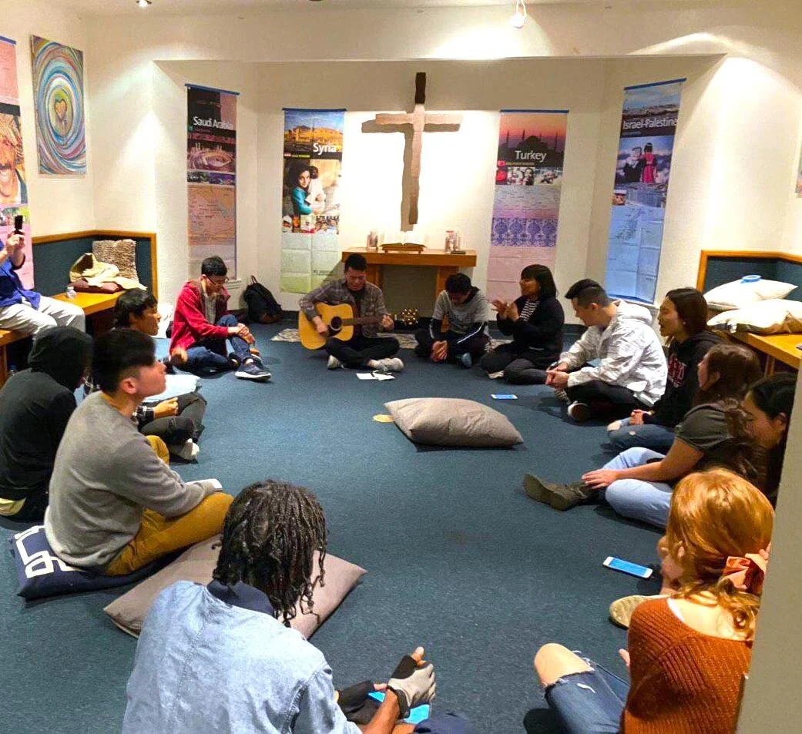

Throughout history, God has chosen to use the weak and foolish to fulfill His purposes. As such, God has consistently placed his calling upon the Young Generation (YG). Though they may be foolish in the eyes of the world, when the Young Generation commits themselves to the Lord, there is nothing that can stop them from making history for the kingdom of God.
Starting with William Carey in the late 18th century, God has used the Young Generation for the fulfillment of the Great Commission and the movement of the gospel to the unreached nations. Carey, Hudson Taylor, and Cameron Townsend—key figures in the modern mission movement—were all young people who made history through faith and obedience to God’s Word. And more significantly, they influenced their generation to rise up, clinging tightly to the Word of God, and give their everything to see the gospel preached where it had never reached before.
With this same heart, InterCP International Campus and InterCP International Young Adults dream of rapid world evangelization in our generation. In North America, the Young Generation commits to see a mission movement of 50,000 young generation missionaries commissioned to the 10/40 Window by the year 2030.
InterCP International Campus, to fulfill this vision, focuses on raising up global leaders through building mission-focused communities on campuses. We challenge our Campus Generation to give one year of their life as a Student Missionary, allowing them to utilize other strategic ministries and trainings to church plant in the unreached nations. We have seen the Student Volunteer Movement (SVM) occur, 200 years ago within our NA campuses and we have faith that God will bring his final mission movement upon our NA campuses through this generation. May we see Campus Generation rise up to take upon the calling and spiritual leadership within the final mission revival.
Inquiries: campus@intercp.org
InterCP International Young Adults challenges the Young Adult generation to be set apart, refuse all that is humanistic and ungodly, and live with the kingdom of God as their priority over the fleeting desires of this world. Young adults use their giftings, work experience, and specialties to pioneer church planting movements in the frontier nations as Young Tentmakers (one-year), Young Generation Missionaries (2-year), and Short and Long-Term Missionaries (2-5 year). As we offer our lives in commitment, may God anoint this generation as the spiritual leaders who will lead the global church in the final mission revival.
For more information, email us at northamerica@intercp.org.
